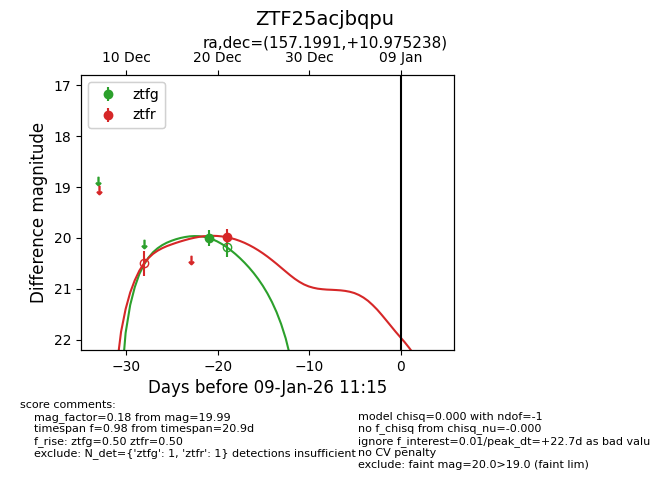
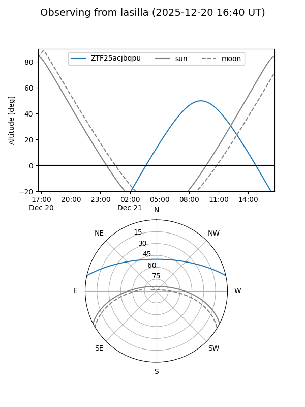
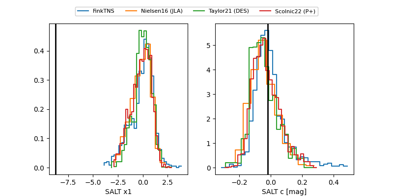

ZTF25acjbqpu
Target ZTF25acjbqpu at 2025-12-21 13:57
Aliases and brokers:
FINK: fink-portal.org/ZTF25acjbqpu
Lasair: lasair-ztf.lsst.ac.uk/objects/ZTF25acjbqpu
ALeRCE: alerce.online/object/ZTF25acjbqpu
alt names
ZTF25acjbqpu (ztf,fink_ztf)
Coordinates:
equatorial (ra, dec) = 157.1991,+10.97524
equatorial (HMS+DMS) = 10:28:47.79,+10:58:30.86
galactic (l, b) = (231.6810,+52.81519)
Flags:
Photometry:
last ztfg=20.00, ztfr=19.99
1 ztfg, 1 ztfr detections
Lightcurve

Visibility


Additional plots
